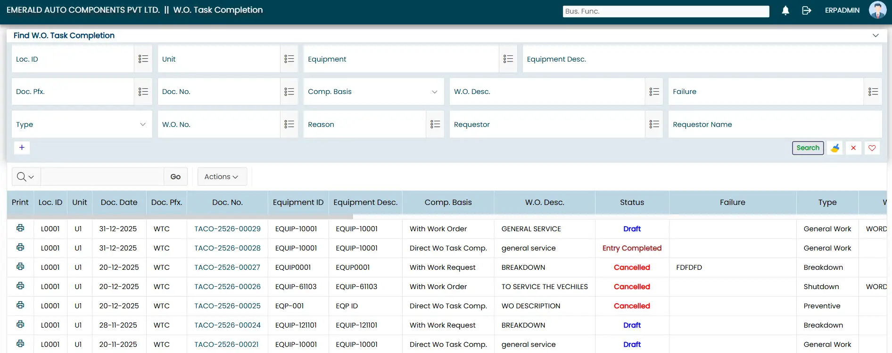
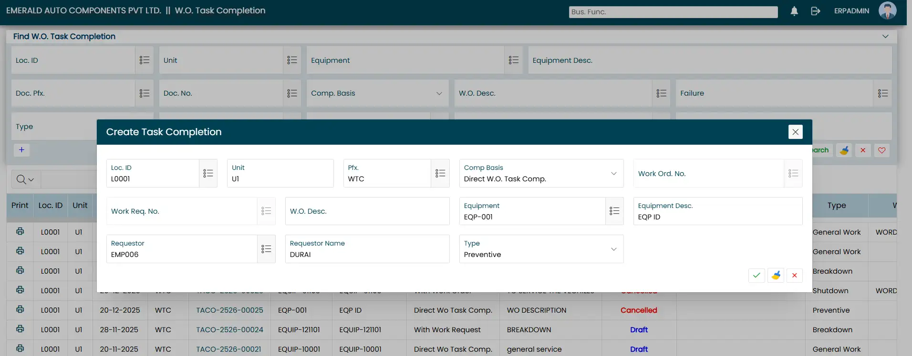
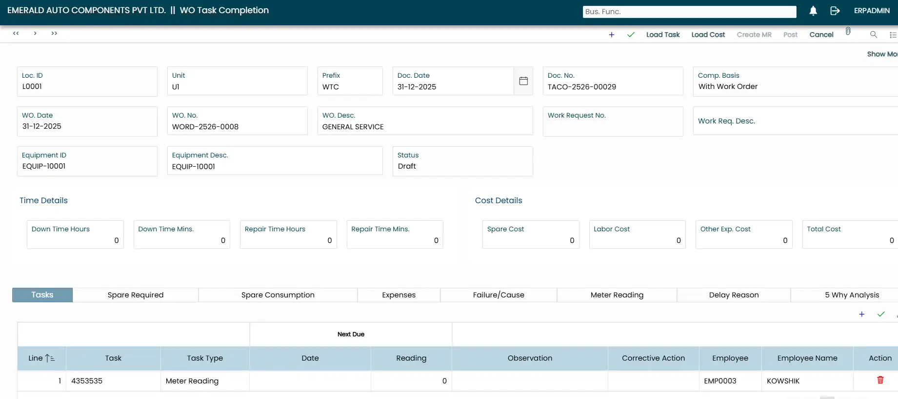

<div data-category="Plant Maintenance" data-title="WO Completion" data-updated="January 27, 2026" data-contributors="RoadmapIT" data-breadcrumb="Home,Plant Maintenance,WO Completion">
  <div class="page-content">
    <p>Once the Work Order document is posted, WO completion document is created as shown below.</p>
    <h5>Navigation path:</h5>
    <p class="fs-6">Plant Maintenance \ Transactions \ W.O. Task Completion</p>
    
    <ul style="list-style-type: none; align-content: center">
      <li class="mouse-icon">Search screen displays the list of Work Order completion records with the relevant details and its status</li>
      <li class="mouse-icon">Click on Search to filter all the records.</li>
    </ul>
    
    <ul style="list-style-type: none; align-content: center">
      <li class="mouse-icon">Using Search, system displays the results relevant to the search parameters entered.</li>
      <li class="mouse-icon">On -click, the corresponding transaction record will be displayed.</li>
      <li class="mouse-icon">
        Using
        
        icon, entered search parameters can be cleared.
      </li>
      <li class="mouse-icon">
        To close the screen, use
        <i class="bi bi-x fs-4 mx-2 text-danger"></i>
        icon
      </li>
      <li class="mouse-icon">
        By Clicking the
        <i class="bi bi-plus fs-4 mx-2 text-primary"></i>
        Add button we can create Work order Task Completion for the required Equipment. The details are populated to the transaction screen once executed.
      </li>
    </ul>
    
    <ul style="list-style-type: none; align-content: center">
      <li class="mouse-icon">Select the Loc ID, Unit is auto populated.</li>
      <li class="mouse-icon">Select the completion basis.</li>
      <li class="mouse-icon">Enter/Select Work Order no.</li>
      <li class="mouse-icon">Enter W.O desc.</li>
      <li class="mouse-icon">Enter the Requestor</li>
      <li class="mouse-icon">
        Click on
        <i class="bi bi-check-lg fs-4 mx-1 text-success"></i>
        to create the new task completion record
      </li>
    </ul>
    
    <ul style="list-style-type: none; align-content: center">
      <li class="mouse-icon">Click the Load Cost Button to load the cost details such as Spare, Labor, external serv. cost</li>
      <li class="mouse-icon">On clicking post button, document is sent for Workflow approval.</li>
    </ul>
  </div>
</div>
